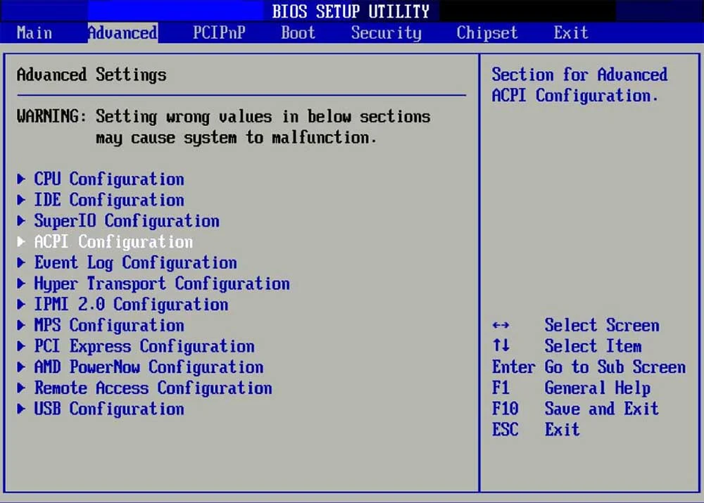
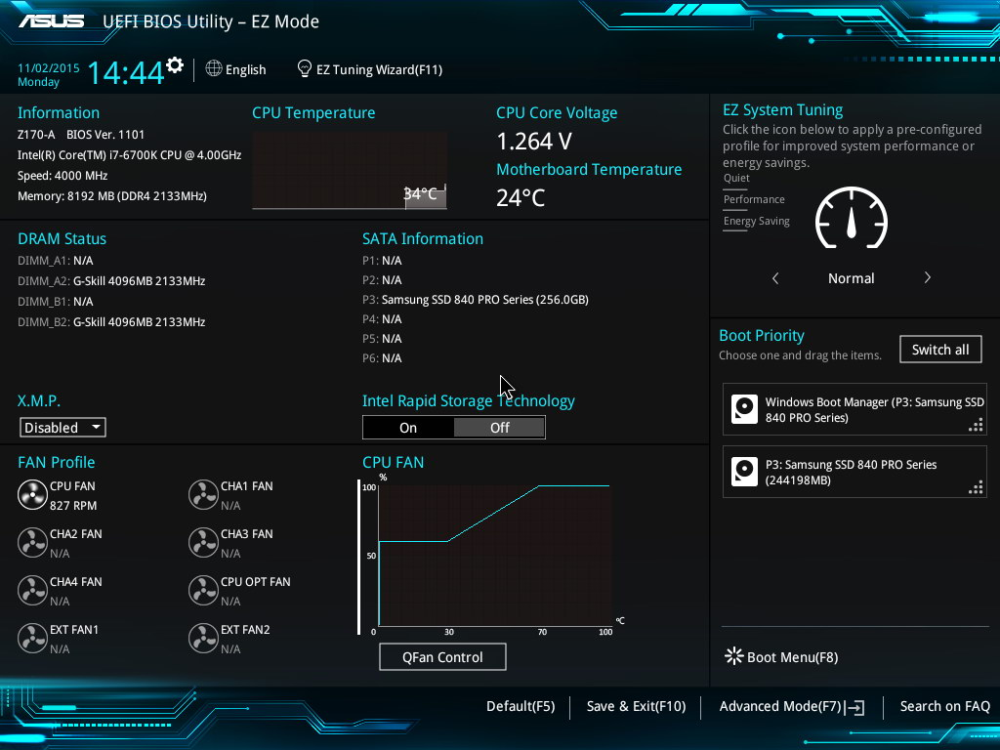
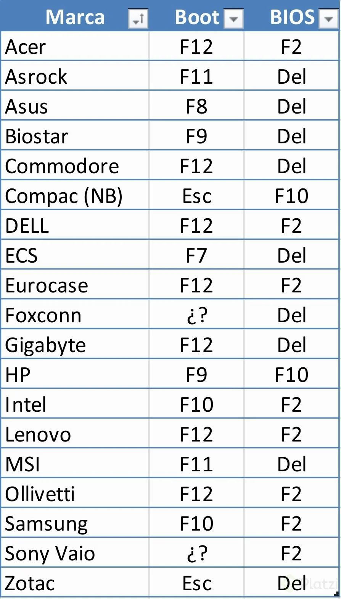
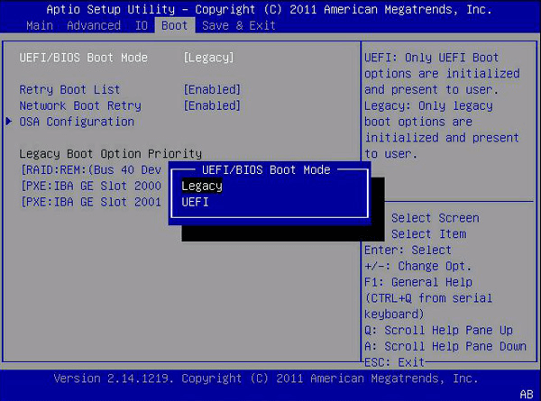
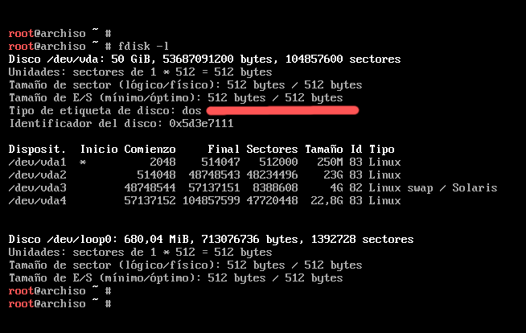

UEFI y BIOS Legacy
UEFI y BIOS Legacy son dos tipos de firmware que se utilizan para iniciar y configurar el hardware de una computadora antes de que el sistema operativo se cargue. Ambos tienen funciones similares, pero difieren en su arquitectura y capacidades.
BIOS Legacy
¿Qué es?
BIOS (Basic Input/Output System) es un firmware más antiguo que ha estado en uso desde los años 80. Se encarga de realizar la autoprueba de encendido (POST, Power-On Self-Test) para verificar que el hardware esté funcionando correctamente. Inicia el sistema operativo desde el MBR (Master Boot Record), que es un esquema de partición más limitado.
Características principales:
- Interfaz basada en texto (generalmente en azul o gris).
- Soporta discos duros de hasta 2 TB debido a las limitaciones del MBR.
- Tiempo de arranque más lento.
- No tiene soporte nativo para interfaces gráficas o ratón.
- Menos seguro, ya que no incluye características avanzadas de seguridad.
Limitaciones:
- Solo puede arrancar desde discos con particiones MBR.
- No es compatible con tecnologías modernas como arranque seguro (Secure Boot) o manejo de discos grandes.
UEFI
¿Qué es?
UEFI (Unified Extensible Firmware Interface) es el sucesor moderno del BIOS. Es más avanzado y flexible, diseñado para superar las limitaciones del BIOS Legacy. Utiliza el esquema de partición GPT (GUID Partition Table), que permite discos más grandes y más particiones.
Características principales:
- Interfaz gráfica moderna (puede incluir soporte para ratón).
- Soporta discos duros de más de 2 TB.
- Tiempo de arranque más rápido.
- Incluye características de seguridad como Secure Boot, que evita la ejecución de software no autorizado durante el arranque.
Ventajas:
- Mayor flexibilidad y soporte para hardware moderno.
- Permite arrancar desde discos GPT, lo que es esencial para sistemas con discos grandes.
- Mejor gestión de controladores y hardware.
Para acceder al Bios o BootMenu deben saber que marca de placamadre tienen y presionar la tecla que sale en la imagen:
Hay algunas computadoras que si traen ambos firmware y puedes elegir con cual trabajar
Diferencias clave entre UEFI y BIOS Legacy
| Característica | BIOS Legacy | UEFI |
|---|---|---|
| Interfaz | Texto (básica) | Gráfica (moderna) |
| Límite de disco | Hasta 2 TB (MBR) | Más de 2 TB (GPT) |
| Tiempo de arranque | Más lento | Más rápido |
| Seguridad | Sin Secure Boot | Con Secure Boot |
| Compatibilidad | Sistemas antiguos | Sistemas modernos |
¿Cuál es mejor?
UEFI es la opción recomendada para sistemas modernos, ya que ofrece mayor seguridad, compatibilidad y rendimiento. BIOS Legacy solo se usa en hardware antiguo o en casos específicos donde se requiere compatibilidad con sistemas operativos o hardware más antiguos.
Verifica si es UEFI o BIOS mediante etiqueta del disco duro
root@archiso ~ # fdisk -l
El tipo de etiqueta del disco es GPT si es UEFI
>>> Presiona aqui para continuar con la instalación en UEFI/EFI <<<

El tipo de etiqueta del disco es DOS si es BIOS/LEGACY
>>> Presiona aqui para continuar con la instalación en BIOS/Legacy <<<
Ventajas y desventajas de UEFI o BIOS/LEGACY
PARA SISTEMAS UEFI CON DISCOS EN GPT
● Tiene disponible 128 particiones primarias
● Es necesario tener su propia particion EFI para arrancar el sistema
● Su particion de arranque debe ser formateada en FAT32 para arrancar el sistema
● Su ruta será /boot
PARA SISTEMAS BIOS/LEGACY CON DISCOS EN MBR
● Tiene disponible 4 particiones primarias y el resto son extendidas
● No es necesario tener una partición para su arranque
● En caso quieran tener su propia partición como /home debe ser formateada en EXT4
Si usted ve la necesidad de cambiar de una tabla de partición a otra, use una de las siguientes opciones.
Tenga en cuenta que este procedimiento eliminará la información del dispositivo de almacenamiento escogido.
Para convertir su disco a GPT :
root@archiso ~ # parted /dev/vda mklabel gpt
Para convertir su disco a MBR.
root@archiso ~ # parted /dev/vda mklabel msdos
Podemos confirmar los cambios con el siguiente comando :
root@archiso ~ # parted -l | egrep "/dev/|msdos|gpt"